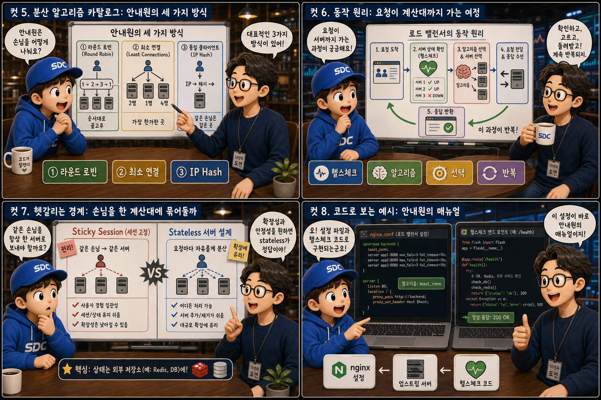
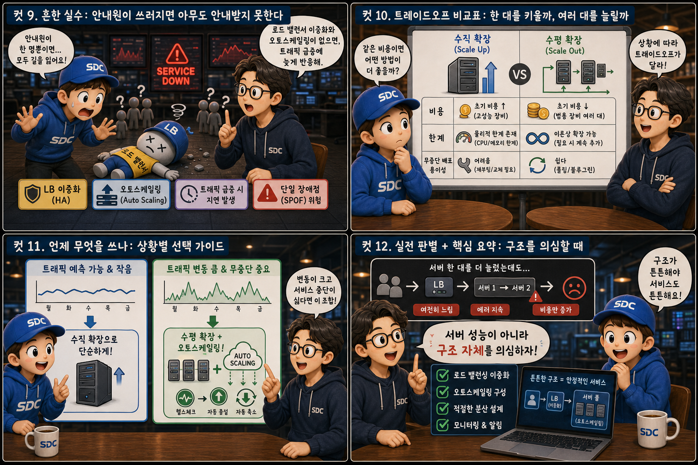

여러 계산대가 늘어선 마트에 비유해, 몰려드는 손님을 안내원이 어떻게 나눠 보내는지 12컷으로 풀어봅니다.
Load Balancer+Scaling
서비스 이용자가 갑자기 늘어나면 서버 한 대로는 감당할 수 없는 순간이 찾아옵니다. 이 문제를 풀어내는 두 축이 로드 밸런싱과 스케일링입니다. 로드 밸런싱은 몰려드는 요청을 여러 서버에 고르게 나눠주는 기술이고, 스케일링은 애초에 처리 능력 자체를 키우는 전략입니다. 이 글에서는 계산대가 여러 개 늘어선 마트 하나를 빌려, 손님(요청)과 안내원(로드 밸런서), 계산대(서버 인스턴스)가 어떻게 맞물려 트래픽 폭주를 견뎌내는지 12컷으로 살펴봅니다.
PART 1 / 3 — 로드 밸런서의 등장과 확장의 두 축 (컷 01–04)
fourcut-01 — 컷 01 ~ 04
컷 01
몰려드는 손님들, 서비스는 어떻게 버틸까
갑자기 손님이 10배로 몰려도 서비스가 멈추지 않게 하는 것, 그것이 로드 밸런싱과 스케일링의 목표다.
대형 마트 입구를 상상해 보세요. 문이 열리자 수십 명의 손님이 한꺼번에 밀려들고, 안쪽에는 계산대 다섯 개가 나란히 줄지어 있습니다. 안내원 한 명이 입구 한가운데 서서 양팔을 벌려 손님들을 각 계산대로 나눠 보냅니다. 서비스를 이용하는 사용자가 늘어나면 서버 한 대로는 감당할 수 없는 순간이 반드시 옵니다. 이 문제를 해결하는 두 축이 로드 밸런싱과 스케일링입니다. 로드 밸런싱은 몰려드는 요청을 여러 서버에 고르게 나눠주는 기술이고, 스케일링은 애초에 처리 능력 자체를 키우는 전략입니다. 이 둘이 맞물려야 트래픽이 폭주해도 서비스가 끊기지 않습니다.
컷 02
안내원이 하는 일: 로드 밸런서의 정의
로드 밸런서는 들어오는 요청을 여러 서버 인스턴스에 나눠주는 중간 장치다.
로드 밸런서는 클라이언트의 요청과 실제 서버들 사이에 위치하는 중간 장치입니다. 사용자는 로드 밸런서의 주소로만 요청을 보내고, 로드 밸런서가 뒤에 있는 여러 서버 중 하나를 골라 그 요청을 전달합니다. 마트로 치면 손님은 안내원에게만 말을 걸 뿐, 어느 계산대가 자신을 맡을지는 신경 쓰지 않습니다. 이렇게 하면 특정 서버 한 대에 부하가 몰리지 않고, 여러 대가 나눠서 일할 수 있습니다. client → load balancer → server
컷 03
나란히 비교: 혼자 버티기 vs 나눠서 버티기
서버 한 대가 모든 요청을 받으면 과부하로 무너지지만, 여러 대로 나누면 각자 여유를 유지한다.
로드 밸런서가 없다면 계산대 하나에 손님이 산더미처럼 쌓여 결국 과열 경고등이 켜집니다. 서버가 한 대뿐이면 모든 요청이 그 한 곳으로 몰려 처리 지연, 응답 실패, 심하면 서버 다운으로 이어지는 것과 같은 그림입니다. 반면 안내원이 있는 쪽에서는 같은 손님들이 세 개의 계산대로 고르게 흩어지고, 줄은 짧고 램프는 여유롭게 켜져 있습니다. 같은 애플리케이션을 여러 서버 인스턴스에 복제해두고 로드 밸런서로 요청을 나누면, 각 서버는 전체 부하의 일부만 처리하면 됩니다. 결과적으로 응답 속도가 안정되고 서버 한 대가 죽어도 나머지가 서비스를 이어갈 수 있습니다.
컷 04
권위 있는 정의: 수직 확장과 수평 확장
확장에는 한 대를 더 강하게 만드는 수직 확장과, 여러 대로 늘리는 수평 확장이 있다.
SCALE-UP
한 대를 더 강하게 만들기
SCALE-OUT
여러 대로 늘리기
scaling strategies
서버 한 대의 CPU와 메모리를 늘려 더 강력한 장비로 교체하는 것이 수직 확장(scale-up)이고, 동일한 서버를 여러 대 복제해 대수를 늘리는 것이 수평 확장(scale-out)입니다. 수직 확장은 구조가 단순하지만 장비 성능에 물리적 한계가 있고, 수평 확장은 이론상 대수를 계속 늘릴 수 있지만 로드 밸런서 같은 분산 장치가 반드시 필요합니다.
PART 2 / 3 — 분산 알고리즘과 동작 원리 (컷 05–08)

fourcut-02 — 컷 05 ~ 08
컷 05
분산 알고리즘 카탈로그: 안내원의 세 가지 방식
안내원이 손님을 나누는 방법에는 순서대로, 가장 한가한 곳, 같은 손님은 같은 곳이라는 세 가지 대표 방식이 있다.
Round Robin은 요청이 들어오는 순서대로 서버를 돌아가며 배정하는 가장 단순한 방식입니다. Least Connections는 현재 처리 중인 연결이 가장 적은, 즉 가장 한가한 서버를 골라 배정해 부하를 더 정교하게 맞춥니다. IP Hash는 같은 클라이언트의 요청을 항상 같은 서버로 보내 세션 정보를 유지해야 하는 상황에 유용합니다. 안내원이 순서대로 안내할지, 줄이 가장 짧은 곳으로 보낼지, 단골 손님은 늘 같은 계산대로 보낼지 정하는 규칙이라고 생각하면 됩니다.
컷 06
동작 원리: 요청이 계산대까지 가는 여정
요청이 도착하면 로드 밸런서가 살아있는 서버를 확인하고, 알고리즘에 따라 하나를 골라 응답을 돌려받는 순환이 반복된다.
① 요청 도착→② 헬스체크→생존 서버 확인→③ 알고리즘으로 서버 선택→④ 응답 생성→사용자에게 반환
요청이 로드 밸런서에 도착하면 먼저 헬스체크를 통해 어떤 서버가 정상 작동 중인지 확인합니다. 응답하지 않거나 오류를 내는 서버는 목록에서 제외되고, 살아있는 서버들 중에서 설정된 알고리즘(Round Robin, Least Connections 등)에 따라 하나가 선택됩니다. 선택된 서버가 요청을 처리해 응답을 만들면 로드 밸런서를 거쳐 사용자에게 돌아가고, 이 과정은 매 요청마다 반복됩니다. 문 닫힌 계산대는 애초에 안내 대상에서 빠지는 것과 같습니다.
컷 07
헷갈리는 경계: 손님을 한 계산대에 묶어둘까
세션을 특정 서버에 고정하는 Sticky Session은 편리하지만, 상태 없는(stateless) 서버 설계가 확장에는 더 유리하다.
Sticky Session은 같은 사용자의 요청을 항상 같은 서버로 보내 로그인 상태나 장바구니 같은 정보를 그 서버의 메모리에 유지할 수 있게 합니다. 구현은 간단하지만 특정 서버에 특정 사용자들이 몰리면 부하가 불균형해지고, 그 서버가 죽으면 세션 정보도 함께 사라집니다. 그래서 서버가 사용자 상태를 아예 기억하지 않고 세션 정보를 Redis 같은 외부 저장소에 두는 stateless 설계가 수평 확장에는 훨씬 유리합니다. 단골 손님을 늘 2번 계산대로만 보내면 편하지만, 장바구니를 손님이 직접 들고 다니게 하면 어느 계산대로 가도 상관없어집니다. sticky session / stateless server
컷 08
코드로 보는 예시: 안내원의 매뉴얼
nginx — upstream 설정
// nginx upstream 설정
upstream backend {
server 10.0.0.1;
server 10.0.0.2;
server 10.0.0.3;
}
nginx 같은 로드 밸런서는 upstream 블록에 백엔드 서버들의 주소를 나열해두는 방식으로 설정합니다. 여기에 각 서버가 /health 같은 엔드포인트에서 정상 응답(200 OK)을 주는지 주기적으로 확인하는 헬스체크를 연결하면, 응답하지 않는 서버는 자동으로 분배 대상에서 제외됩니다. 설정 파일 몇 줄과 간단한 헬스체크 코드만으로도 여러 서버를 하나의 서비스처럼 묶어낼 수 있습니다.
PART 3 / 3 — 실수, 트레이드오프, 그리고 선택 (컷 09–12)

fourcut-03 — 컷 09 ~ 12
컷 09
흔한 실수: 안내원이 쓰러지면 아무도 안내받지 못한다
로드 밸런서 자체가 단일 장애점이 되지 않도록 이중화해야 하고, 오토스케일링 설정이 없으면 트래픽 급증에 늦게 반응한다.
⚠ SPOF: 안내원이 한 명뿐이라면
로드 밸런서는 모든 요청이 거쳐가는 관문이기 때문에, 그 자체가 한 대뿐이면 그것이 다운되는 순간 뒤에 서버가 아무리 많아도 서비스 전체가 멈춥니다.
✓ 이중화 + 오토스케일링
로드 밸런서도 이중화하거나 클라우드의 관리형 로드 밸런서를 사용해 단일 장애점을 없애야 합니다. 트래픽 급증에 맞춰 서버 대수를 자동으로 늘리는 오토스케일링 설정이 없거나 임계값이 지나치게 보수적이면, 새 서버가 준비되기 전에 이미 사용자들이 지연과 오류를 겪게 됩니다.
유일한 안내원이 쓰러지면 뒤에 멀쩡한 계산대가 다섯 개 있어도 아무도 안내받지 못해 텅 비어 있는 것과 같습니다. 손님이 갑자기 몰렸는데 계산대는 그대로이고 새 계산대가 저 멀리서 천천히 조립되고 있다면, 그 사이 대기줄은 문 밖까지 늘어섭니다.
컷 10
트레이드오프 비교표: 한 대를 키울까, 여러 대를 늘릴까
수직 확장과 수평 확장은 비용, 한계, 무중단 배포 용이성에서 뚜렷이 다른 트레이드오프를 가진다.
장비 한 대를 키우는 한계 vs 대수를 늘리는 유연함
비교 축
수직 확장 (Scale-up)
수평 확장 (Scale-out)
비용
고성능 장비일수록 기하급수적으로 증가
저렴한 서버를 여러 대로 분산
한계
물리적 한계에 부딪힘
이론상 한계가 거의 없음
무중단 배포
교체 중 서비스 중단이 발생하기 쉬움
한 대씩 순서대로 교체 가능
수직 확장은 초기에는 간단하지만 고성능 장비일수록 비용이 기하급수적으로 오르고, 결국 물리적으로 더 키울 수 없는 한계에 부딪힙니다. 수평 확장은 저렴한 서버를 여러 대 늘리는 방식이라 이론상 한계가 거의 없고, 서버 한 대씩 순서대로 교체하며 무중단 배포를 하기도 훨씬 쉽습니다. 다만 수평 확장은 로드 밸런서, 상태 관리, 데이터 동기화 같은 추가 설계가 필요하다는 점이 대가로 따라옵니다.
컷 11
언제 무엇을 쓰나: 상황별 선택 가이드
트래픽이 예측 가능하고 작으면 수직 확장으로 단순하게, 변동이 크고 무중단이 중요하면 수평 확장과 오토스케일링을 쓴다.
📊 작고 예측 가능한 트래픽 → 수직 확장
사용자 수가 안정적인 서비스
트래픽 변동이 크지 않음
서버 한 대 사양만 올려도 충분
📊 변동 크고 무중단이 중요 → 수평 확장 + 오토스케일링
이벤트·시간대별로 트래픽 출렁임
서비스 중단을 허용할 수 없음
로드밸런서 + 서버 대수 자동 조절
사용자 수가 안정적이고 트래픽 변동이 크지 않은 서비스라면 서버 한 대의 사양을 올리는 수직 확장만으로도 충분히 단순하고 관리하기 쉽습니다. 반면 이벤트나 시간대에 따라 트래픽이 크게 출렁이고 서비스 중단을 허용할 수 없는 서비스라면, 로드 밸런서 뒤에 여러 서버를 두고 트래픽에 맞춰 서버 대수를 자동으로 늘리고 줄이는 오토스케일링을 결합한 수평 확장이 적합합니다. 실무에서는 처음엔 수직 확장으로 시작했다가 트래픽이 커지면서 수평 확장으로 전환하는 경우가 흔합니다.
컷 12
실전 판별과 핵심 요약: 구조를 의심할 때
서버 한 대를 늘려도 문제가 해결되지 않는다면, 서버 성능이 아니라 구조 자체를 의심해야 한다.
서버 사양을 아무리 올려도 응답 지연이 풀리지 않는다면, 병목이 서버의 연산 능력이 아니라 데이터베이스, 네트워크, 혹은 애플리케이션 구조 자체에 있을 가능성이 큽니다. 이럴 때는 무작정 서버를 늘리기 전에 어디서 시간이 지연되는지부터 진단해야 합니다. 결국 로드 밸런싱과 스케일링은 서버를 늘리는 기술이지만, 그 효과를 제대로 보려면 헬스체크, 무상태 설계, 이중화, 오토스케일링이라는 기본기가 함께 갖춰져 있어야 합니다.
로드 밸런서 = 요청 분배 중간 장치수직 확장 vs 수평 확장Round Robin / Least Connections / IP Hash헬스체크로 생존 서버만 선택Stateless 설계가 확장에 유리로드 밸런서 이중화 + 오토스케일링
하나의 마트, 두 개의 축
로드 밸런싱은 몰려드는 요청을 여러 서버에 고르게 나누고, 스케일링은 그 서버들의 처리 능력 자체를 키웁니다. 손님을 나눠 보내는 안내원과 나란히 늘어선 계산대처럼, 두 축이 함께 맞물려야 트래픽 폭주에도 서비스는 멈추지 않습니다.